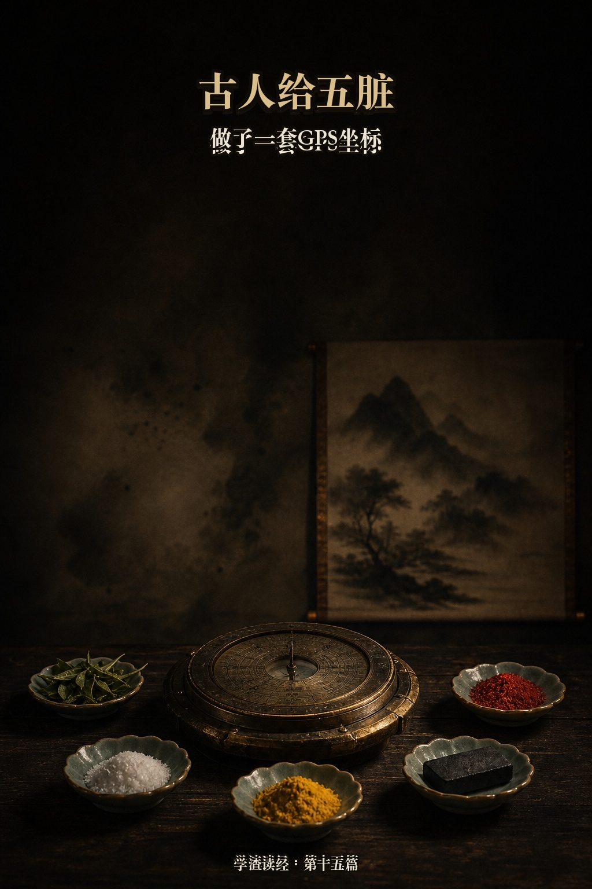
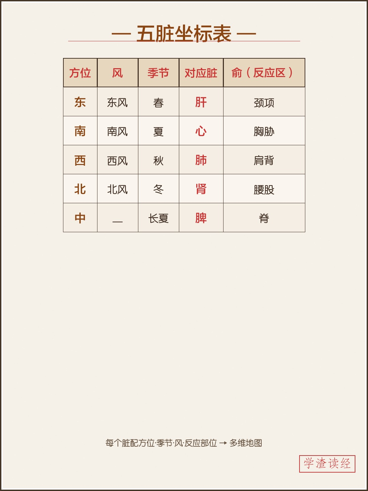
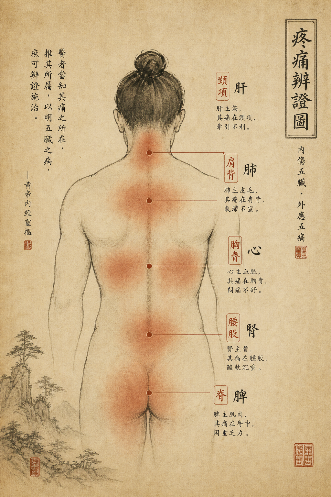
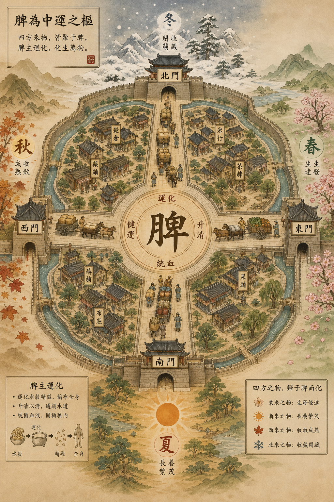
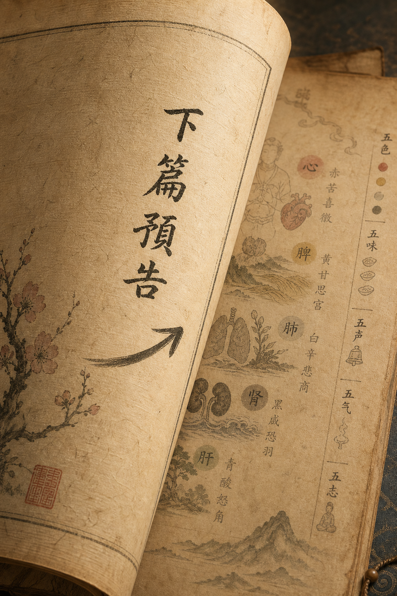

写在最前：这是我读《黄帝内经》的学习笔记，不是教学。我读得慢、读得浅，会读错。看到不对的地方欢迎指正——但请不要把我写的任何内容当作就医建议。

《素问·金匮真言论》，五脏与方位季节的对应：
东风生于春，病在肝，俞在颈项；南风生于夏，病在心，俞在胸胁；西风生于秋，病在肺，俞在肩背；北风生于冬，病在肾，俞在腰股；中央为土，病在脾，俞在脊。
新篇章了。《金匮真言论》——金匮是金柜子，放重要文书的地方；真言是真实的话。意思是"藏在金柜里的真话"。
这一篇开始画地图——把方向、季节、脏腑、身体部位全部对应起来。
我把原文排成表格，画面就清楚了：
| 方位 | 风 | 季节 | 对应脏 | 俞（容易犯病的部位） |
|---|---|---|---|---|
| 东 | 东风 | 春 | 肝 | 颈项 |
| 南 | 南风 | 夏 | 心 | 胸胁 |
| 西 | 西风 | 秋 | 肺 | 肩背 |
| 北 | 北风 | 冬 | 肾 | 腰股 |
| 中央 | — | 长夏 | 脾 | 脊 |
读完第一感觉：古人在做什么？他们在给五脏建坐标系。
每个脏腑不只是一个器官——它有方位（东南西北中），有时间（春夏秋冬），有对应的风（外邪入口），有容易出问题的身体位置。
这不是一个"器官列表"，这是一张多维地图。

这是我卡住的地方。
肝在东方，心在南方——这显然不是解剖学意义上的"肝在身体的东边"。那它是什么意思？
我目前的理解（非常初步）：
古人观察到，东方是太阳升起的地方，对应"生发"。春天也是生发的季节。肝在五脏里主的也是生发、疏泄。所以三者被归到一组——不是因为它们在空间上相连，而是因为它们的"性质"相似。
东 = 升起 = 春 = 生发 = 肝
南 = 最热 = 夏 = 旺盛 = 心
西 = 落下 = 秋 = 收敛 = 肺
北 = 最冷 = 冬 = 收藏 = 肾
中 = 不动 = 居中调度 = 脾
这是一个类比系统——把性质相似的东西归到同一个格子里。不是说肝真的在东边，是说肝的"能量特征"跟东方、春天一样，都是向上、向外、生发的。
这跟现代思维很不一样。现代医学按解剖位置分类：肝在右上腹、心在胸腔中偏左。古人按"功能特征"分类：肝主生发、跟春天同类、跟东方同组。
两套分类法，看的是同一堆器官，但切入角度完全不同。
每一行末尾的"俞"我查了一下，大致是"该脏腑容易出问题时的反应区域"。
这其实是一套"疼痛定位指南"——你哪里不舒服，可能提示哪个脏有问题。
脖子总是僵硬？也许不只是姿势问题，也许跟肝有关。腰总是酸？也许不只是腰肌劳损，也许跟肾有关。
我不知道这个对应关系在临床上有多准确，但作为一个框架来说，它至少提供了一种"症状→脏腑"的快速关联思路。

五脏里其他四个都有方位和季节：东春肝、南夏心、西秋肺、北冬肾。
脾在"中央"。
没有方位倾向，没有季节限定。它在中间，像一个枢纽、一个中转站。
我想到了一个比喻：如果肝心肺肾是东南西北四个城市，脾就是中间的交通枢纽。所有物资都要经过它转运——你吃进去的食物变成气血，靠的就是脾的运化。
脾不偏任何一方，但它服务所有方。这个"中央"的位置不是没有存在感——恰恰是最不可或缺的。
后面有一种说法叫"脾为后天之本"——你先天的本钱（肾精）用完了就没了，但后天靠吃饭补充的能量（脾的运化）可以一直续。

用大白话复述（依然标注"未必对"）：
古人给五脏建了一套坐标系：每个脏配一个方位、一个季节、一种风、一个身体部位。不是解剖学上的位置关系，而是"功能特征"的分组——生发的归一组（东/春/肝）、收敛的归一组（西/秋/肺），以此类推。脾在中央，不偏不倚，是整个系统的交通枢纽。这张坐标表的实用价值是：知道哪个季节哪个脏容易出问题，症状会在身体哪个部位表现。
下一篇继续《金匮真言论》：
东方青色，入通于肝，开窍于目，藏精于肝，其病发惊骇……
上面那张表只给了方位和季节。下一段更细——颜色、味道、声音、情绪……每个脏都有一张完整的"身份证"。
下篇见。
